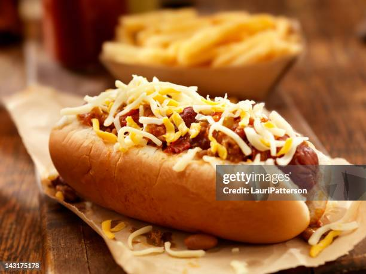

Uma receita clássica e deliciosa, apronta em poucos minutos!
1kg de salsicha
400g de molho de tomate
1 cebola grande ralada
2 lata de milho verde
sal a gosto
3 colheres de óleo
cheiro-verde a gosto
3 dentes de alho amassados
Passo 1 Em uma panela com o óleo, refogue o alho e a cebola.
Passo 2
Adicione o pimentão, os tomates, o sal e o cheiro-verde.
Passo 3
Misture bem e deixe ferver por 5 minutos.
Passo 4
Acrescente o molho de tomate, o milho e as salsichas inteiras ou picadas em rodelas.
Passo 5
Deixe cozinhar por 10 minutos e sirva com pãezinhos.
Sirva e seja Feliz! 🤩
2025-Feito por Rhaynner Mateus